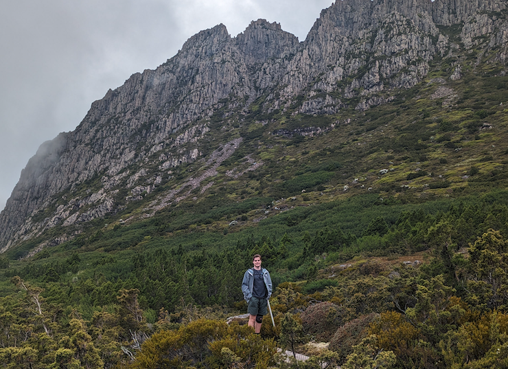

# info
--------------------------------------------------------------------------------
name jordan wasserberger
pronouns he/him/his
hometown new york, ny
program currently studying economics at the college, class of 2027
passion video games, photography, hockey, and building things
# bio
# --------------------------------------------------------------------------------
i grew up in new york, and have always loved working with my hands and building something, whether it was Legos as a kid or random bits of furniture now. i'm super excited to have the opportunity to dive in and learn a ton about how things fit together and how things work, and hopefully make some pretty cool stuff! outside of that, i'm an extraordinarily passionate hockey fan, i love photography, and my life's dream is to run my own video game studio, which i got started on last year :]
my favorite photo i've ever taken 
# hong kong, nye, 2024
# --------------------------------------------------------------------------------
this website is largely adapted from the ps70 documentation website created by manas kulkarnii.